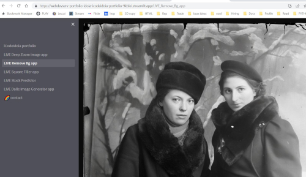
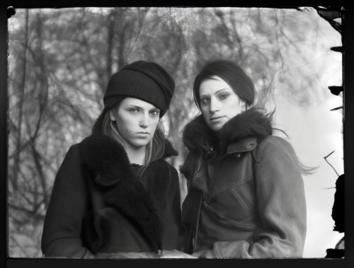
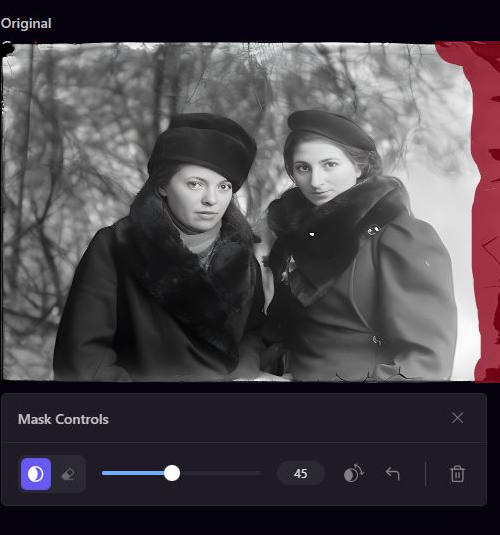
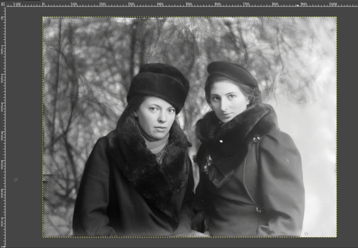

ENVIA TU FOTO
La generacion de modelos con imágenes generadas con inteligencia artificial nacio cuando creamos ArtGen.
Instrucciones:
- Envía tu fotografía a idoiapaterson@yahoo.com.
- Recibirás instrucciones detalladas. Después de realizar el pago, te proporcionaremos cuatro imágenes únicas generadas por inteligencia artificial, inspiradas en la fotografía que nos proporciones. ¡Prepárate para sorprenderte con los resultados!
Algunas utilidades a las que se le pueden dar es impresion en camisetas, tazas, inspiraciones y creaciones artisticas, fotos de perfil rn linea etc. etc.
Es importante subrayar que no será tu replica exacta sino que tendra una inspiracion de la foto que aportes.Argibideak
- Bidali zure argazkia idoiapaterson@yahoo.com.
- Argibideak jasoko dituzu. Ordainketa jasotzen dugunean, lau Inteligentzia artifizialarekin sortutako irudiak jasoko dituzu zure argazkian inspiratuta.
PONTE EN CONTACTO
Puedes ponerte en contacto con nosotros en este enlace.BLOG: "Restauración de fotos usando AI + GIMP"
Aprende a restaurar fotografías manteniendo su esencia original. A veces, la IA agrega resultados falsos, como agregar maquillaje, etc., y en este ejercicio nuestro objetivo es preservar el espíritu de la fotografía original.- Elimina el fondo de la imagen original en línea con mi aplicación GRATUITA para eliminar fondos.
 - "Import" la imagen y crea un nuevo fondo que te guste usando AI Stable Diffusion en línea.
 - Combina las dos imágenes con una aplicación de diseño gráfico, yo utilicé GIMP.

- Importa la nueva fotografía creada en Stable Diffusion en línea y pasa a una intensidad de imagen de 95 o superior.
- Use inpaint en la aplicación Stable Diffusion para arreglar los bordes de la fotografía y editarla si es necesario.
 - Has creado una admirable fotografía restaurada que mantiene la esencia de los individuos en la foto original.

¡Bien hecho!